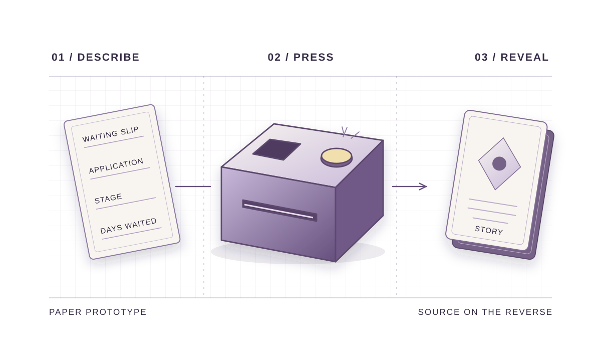

Signal Box.
A paper prototype that offered international students a real applicant’s story while they waited to hear back about a job.
My role. I interviewed three international students about how they decide whether to wait, follow up or move on. I designed and iterated the paper prototype, then reviewed one usability test recording and logged what the participant did at each step.

01 / RESEARCH AND TESTING
Interviews and prototype testing
Interviews. I reviewed existing research and mapped who could influence the wait. In each interview, I asked the participant to walk me through one application, from the last employer contact to what they checked and what made them act.
Prototype testing. In four exploratory sessions, participants thought aloud as they described their situation on a slip, pressed a button and received a story card. A facilitator selected a matching card behind the box (Wizard of Oz). For the session I reviewed, I recorded task times, hesitation, prompts and whether the participant found the source on the back of the card.
Questionnaires. I evaluated the prototype with the 10-item System Usability Scale (SUS), a worry rating before and after the test, and a trust rating after participants saw the story’s source. Three sessions yielded complete responses.
02 / FINDINGS AND ITERATION
A clearer response from the box
- SUS score
- 76.7 / 100
- Worry before and after
- 4.67 → 2.67 / 5
- Trust after seeing the source
- 4.33 / 5
These scores describe three complete responses. I still needed to test whether people saw the story as an example or took it as a prediction about their own application.
Some participants hesitated or pressed repeatedly, so I added a light and sound response. Readers needed a prompt to turn the card over, so I made the two-sided format more obvious. A request to share a story led to an optional submission route alongside source verification.